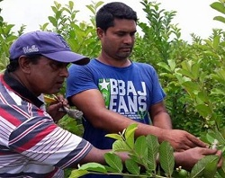
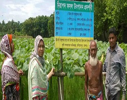
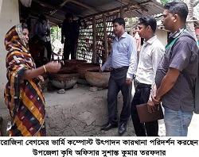

পরিবেশ বান্ধব বিষমুক্ত নিরাপদ ফসল উৎপাদন
মোঃ ফারুক হোসেন শিমুল বয়সঃ-৩৫ বছর, অর্থ নীতিতে এম এ পাশ করেছেন। জীবনকে সার্থক করে তুলতে চান যশোরের মুণরামপুরের, মহোনপুরের কৃতি সন্তান মোঃ ফারুক হোসেন শিমুল। তিনি শিমূল নামে ছোট বড় সাবর কাছে পরিচিত। ছাত্র জীবন থেকেই তার স্বপ্ন কৃষিতেই বৈপ্লবিক পরিবর্তন ঘটানো। তিনি কৃষি বিষয় উচ্চতার ডিগ্রী গ্রহন করেননি ঠিকই কিন্ত তিনি উপজেলা কৃষি অফিস থেকে নিয়মিত কৃষি প্রযুক্তি গ্রহন করেন এবং সেটাই তিনি তার চলার পথের সংঙ্গী হিসাবে বেঁচে নেন। তার জীবনে কৃষিতে প্রমথ যাত্রা শুরু ষ্ট্রবেরী চাষ করে। প্রথম ২০০৯ মাসে উপ-সহকারী কৃষি কর্মকর্তা, জনাব এস চৈতন্য কুমার দাশ, এর সহিত সাক্ষাৎ করেন। তার সাথে সাক্ষাৎ এর পর থেকেই ষ্ট্রবেরী চাষে উদ্বুদ্ধ হয়ে প্রথম তিনি ষ্ট্রবেরী ৬৫ শতক জমিতে ষ্ট্রবেরী চাষ শুরু করেন। সেখান থেকে তিনি ৬ মাসে ১,৫০,০০০/- টাকা আয় করেন। আজও তিনি সেই ষ্টবেরীর চাষ ধরে রেখেছেন।
হাসান আলী সবজী চাষ করে আত্মনির্ভরশীল
মোঃ হাসান আলী (বয়স ৬৩) ৪র্থ শ্রেণী পর্যন্ত পড়াশুনা করেন। এর পর তার বাবার হাত ধরে কৃষি কাজ শুরু করেন। কৃষি নির্ভরশীল এই কৃষক কৃষি কাজ করে কোন রকম জীবিকা নির্ভর করেন। গতানুগতিক ধারায় সনাতন পদ্ধতিতে চাষাবাদ করে থাকেন একদিন সাক্ষাৎ হয় উপ সহকারী কৃষি কর্মকর্তা রুবিনা আক্তার এর সাথে। সে উচ্চমূল্যের ফসল লাউ ফসল চাষ করার পরামর্শ প্রদান করেন এবং সাথে সাথে নিজের সুস্থ্য থাকতে ও অপর কে সুস্থ্য রাখতে নিরাপদ সবজি চাষ (সেক্স ফেরোমন ফাঁদ) ব্যবহার করার পরামর্শ প্রদান করেন। উপ সহকারী কৃষি কর্মকর্তার পরামর্শ অনুযায়ী ও কৃষি সম্প্রসারণ অধিদপ্তরের সহায়তায় উচ্চমূল্যের ফসল লাউ চাষ শুরু করেন। সেক্স ফেরোমন ফাঁদ ব্যবহারে কীটকাশন স্প্রে করা লাগে না এতে শরীর সুস্থ্য থাকে এবং বিষ মুক্ত সবজী পাওয়া যায়। এ দেখে পাশের অন্য কৃষকরা লাউ এ সেক্স ফেরোমন ফাঁদ ব্যবহার করার উদ্যোগ গ্রহণ করেন। পাশাপশি কৃষি সম্প্রসারণ অধিদপ্তরের কর্মকর্তাবৃন্দ নিরাপদ সবজী উৎপাদনে পরামর্শ প্রদান করেন। এলাকায় ব্যাপক ভাবে কৃষকেরা লাউ এ সেক্স ফেরোমন ফাঁদ ব্যবহার করেন। কৃষকের বসত বাড়ীর পাশে ৩৩ শতক জমিতে লাউ চাষ করেন। উক্ত কৃষকের লাউ চাষে ৩০,০০০/- টাকা বিক্রয় করেন। কৃষকের লাউ ফসল উৎপাদনে ব্যয় হয় ৫,০০০/- টাকা। এবং আয় হয় ২৫,০০০/- টাকা। তিনি আগামী মৌসুমে ৯৫ শতক জমিতে লাউ ফসল চাষ করার পরিকল্পনা করেছেন। এই সবজী ক্ষেত নিয়মিত পরিদর্শন করেন কৃষি সম্প্রসারণ অধিদপ্তর, মনিরামপুর এর কৃষি কর্মকর্তাবৃন্দ।
আত্মবিশ্বাসী এক নারীর গল্প
সংসারের অভাবের কারণে যাকে একদিন সেলাই মেশিন বিক্রি করে দিতে হয়েছিল; সেই রোজিনা বেগম এখন নিজে স্বাবলম্বী এবং স্বাবলম্বী করে তুলছেন অন্য নারীদের। বলছি যশোর জেলার মনিরামপুর উপজেলা দূর্বাডাঙ্গা ইউনিয়নের খাটুয়াডাঙ্গা ব্লকের দত্তকোনা গ্রামের রোজিনা বেগমের (২৯) কথা। রোজিনা বেগম জন্মগ্রহণ করেন ১৯৮৬ সালে, মনিরামপুর উপজেলার নেহালপুর ইউনিয়নের নেহালপুর (ঝাউতলা) গ্রামে। দুই ভাই ও এক বোনের মধ্যে রোজিনা বেগম ছিলেন সবার ছোট। বাবা ছিলেন অতি দরিদ্র দিন মজুর। তার সম্পদ বলতে ছিল পাঁচ কাঠা আবাদি জমি এবং তিন কাঠা বসতবাড়ি।
বাল্যকাল থেকেই লেখাপড়ার প্রতি প্রবল আগ্রহ ছিল রোজিনার। কিন্তু দারিদ্রের কারণে অষ্টম শ্রেণির বেশি লেখাপড়া করতে পারেননি তিনি। একদিন স্কুল থেকে বাড়ি ফিরে রোজিনা তাদের বাড়িতে বেশ কয়েকজন অপরিচিত লোক দেখতে পান। প্রথমে কিছু বুঝতে না পারলেও পরে কথা বার্তার মাধ্যমে বুঝতে পারেন যে, তার বিয়ের আলোচনা চলছে। এরপর ২০০২ সালের জুন মাসে পারিবারিক সিদ্ধান্তে একই উপজেলার দত্তকোনা গ্রামের শফিকুল ইসলামের সাথে বিয়ে হয়ে যায় তার। বাল্যবিবাহের শিকার হন রোজিনা। বিয়ের পর রোজিনা জীবনে শুরু হয় দারিদ্র্যের আরেক নতুন অধ্যায়। দিন মজুর স্বামীর স্বল্প আয়ের কারণে সংসারে অভাব-অনাটন লেগেই থাকে। স্বামীর আয় ছিল দৈনিক পঞ্চাশ টাকা হিসেবে প্রতিমাসে মাত্র দেড় হাজার টাকা। আর সম্পদ বলতে ছিল চার কাঠা আবাদি জমি এবং দেড় কাঠার উপর বসতবাড়ি। পরিবারে আয় বাড়ানোর লক্ষ্যে হাঁস-মুরগি পালন শুরু করেন রোজিনা। তাদের অভাবের সংসারে আসে দুইটি পুত্র সন্তান। আল মামুন এবং আরাফাত হোসেন। এতে সংসারে বেড়ে যায় সদস্য সংখ্যা, বাড়তে থাকে অভাব-অনটন। সংসারের অভাব ঘোচাতে ২০০৫ সালে স্থানীয় একটি বিদ্যালয়ে মাসিক ১২০ টাকা বেতনে শিক্ষকতা শুরু করেন তিনি। কিন্তু দু বছর পর স্কুলটি বন্ধ হয়ে যায়। এরপর তার নিজের কিছু জমানো টাকা দিয়ে ২০০৬ সালে একটি সেলাই মেশিন ক্রয় করেন রোজিনা এবং প্রতিবেশী এক চাচীর কাছে সেলাইয়ের হাতে খড়ি নেয়। পরবর্তীতে সেলায়ের কাজ শিখে এ কাজটি করতে থাকেন। কিন্তু অভাবের কারণে ২০১১ সালে তার একমাত্র সম্পদ সেলাই মেশিনটিও বিক্রি করে দিতে বাধ্য হন রোজিনা বেগম।
২০১২ সালে হঠাৎ একদিন রোজিনার দেখা হয় উপ সহকারী কৃষি অফিসার মোঃ ফরহাদ শরীফের সাথে। তার কাছ থেকে কৃষি বিষয়ক বিভিন্ন তথ্য পেয়ে তার লক্ষ্য ও উদ্দেশ্য হয় যে বাড়ির আঙ্গীনায় ভার্মি কম্পোস্ট উৎপাদন করা। কিছুদিন পর ভার্মি কম্পোস্টের উপর কৃষি সম্প্রসারণ অধিদপ্তর মনিরামপুর যশোর কর্তৃক আয়োজিত দিনব্যাপী এক প্রশিক্ষনে অংশ নেয় রোজিনা বেগম। প্রশিক্ষণে ‘আত্মশক্তিতে বলীয়ান ব্যক্তি কখনও দরিদ্র থাকতে পারে না’- এই শ্লোগান এবং এ সংক্রান্ত আলোচনা উপজেলা কৃষি অফিসার জনাব সুশান্ত কুমার তরফদারের কাছ থেকে দিক নির্দেশনা পেয়ে রোজিনা ভার্মি কম্পোস্টের উপর আকৃষ্ট হয়। তিনি বুঝতে পারেন যে, জীবনে কাঙ্খিত সফলতা অর্জন করতে হলে আত্মবিশ্বাসী ও পরিশ্রমী হতে হবে। প্রশিক্ষণ থেকে ফিরে তিনি নিজ গ্রামে তথা পাড়ার পিছিয়ে পড়া হতদরিদ্র নারীদের আর্থ-সামাজিক উন্নয়নের জন্য নিরলসভাবে কাজ করতে থাকেন। রোজিনা তার গ্রামের ২০জন নারীকে নিয়ে নতুন উদ্যেমে একটি কৃষি সংগঠন গড়ে তুলতে স্থানীয় উপ সহকারী কৃষি অফিসার মোঃ ফরহাদ শরীফের কাছে অভিব্যক্তি প্রকাশ করেন। পরবর্তীতে সরকারের দ্বিতীয় শস্য বহুমূখী করণ প্রকল্পের (এসসিডিপি) সদস্য হন এবং উপ সহকারী কৃষি অফিসার মোঃ ফরহাদ শরীফের উপস্থিতিতে বিভিন্ন কৃষি বিষয়ক কার্যক্রম যেমনঃ বসত বাড়িতে সবজি চাষ, মা ও শিশুর পুষ্টি নিশ্চিত করণ, বার মাসি সজিনা চাষ, গুটি/মিশ্র ইউরিয়া সার ব্যবহার, আলোক ফাঁদ স্থাপন, কৃষি ডাক্তারি সেবা, ভার্মি কম্পোস্ট ব্যবহারে উদ্ভুদ্ধ করণ বিষয়ে সচেতনতা মূলক তথ্য প্রদান করেন।


.jpg)